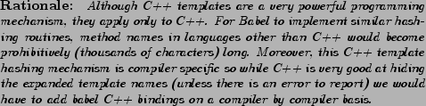

Next: Numeric Types Up: SIDL Basics Previous: The From Clause Contents Index
Table 5.1 briefly
shows the different data types that are supported
in Babel. Refer to each chapter for the language specific bindings
for each SIDL type. The ``S'' in SIDL stands for
``Scientific.'' This emphasis is reflected in the
fundamental support for complex numbers (fcomplex
and dcomplex) and dynamic multidimensional arrays
(array Type,Dim
Type,Dim ).
).
C++ developers looking at the SIDL syntax for arrays,
might think that SIDL is a templated IDL, but this
is not so. Although the syntax for SIDL arrays looks
like a template, it is specific only to the array type.
Developers cannot create templated classes or methods
in SIDL.

Discussion of the various types is broken up into sections. Numeric types such as bool, char, int, long, float, double, fcomplex, dcomplex, strings, as well as information about enumerated types and the opaque type are all covered in this Subsection 5.3.
Information about extended types such as Interfaces and Classes along with the methods they contain are described in Section 5.7, and Section 5.4 covers Array.